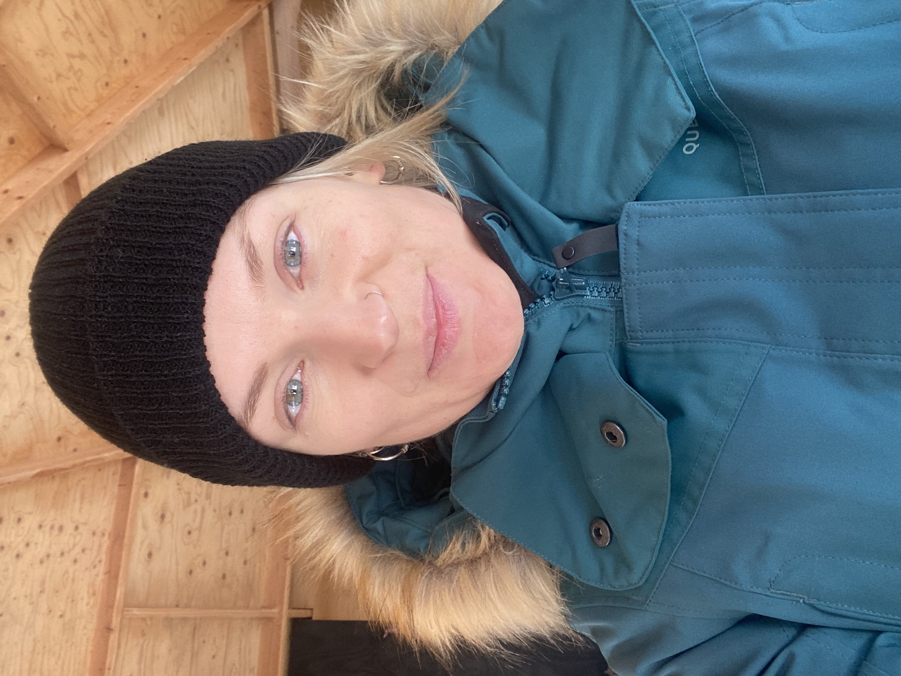

Wie ben ik eigenlijk?
Julia Zijderveld! 🙋♀️
Opgegroeid in Hilversum (a.k.a. Hillywood, Beverly Hilversum, The Hills). Heel fijne liefdevolle jeugd gehad, maar wel halsoverkop vertrokken toen ik 19 werd. Nu blije inwoner van Amsterdam (West)!
Oorspronkelijk een video producer, maar inmiddels opzoek naar meer rust in mij leven en die vind ik voornamelijk aan yoga en meditatie. Ik ben een tikkeltje borderline en heb al heel wat therapie trajecten achter de rug, maar wat het meest heeft gewerkt tot nu toe is ruimte in lichaam en geest creëren. Ik kan vele malen beter omgaan met stress en ik herstel sneller van pijnlijke situaties.
Daarnaast heb ik op jonge leeftijd op hoog niveau gesport en dat heeft gevolgen gehad voor mijn lijf. Al vanaf mijn tienerjaren heb ik chronisch last van mij rug en schouders gehad, dit is inmiddels door yoga zo goed als verdwenen. Ik ben 31 en heb me nog nooit zo fit gevoeld!
